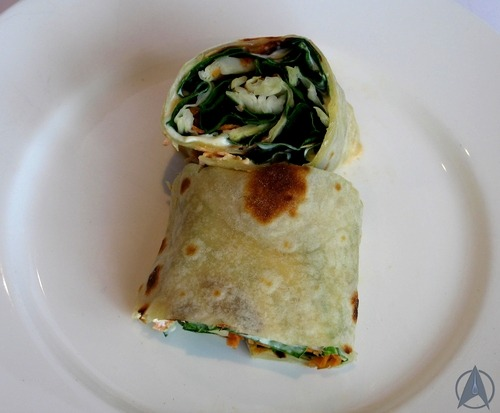

A savory vulcan dish of beetroots, sweet potatoes, celery and garlic, simmered in a homemade vegetable stock.
Gladst (Vgn)
A natural Klingon stir fry of mushrooms, garlic, ginger and chilis. Served with an optional sauce for added flavor.
Riskian Cheese Puff (Veg)
A buttery pastry filled with cheese to serve the crew at every meeting. Enough to make smalltalk unnecessary.
Ratamba Stew (Veg)
A pungent stew of the freshest greens slowly cooked with curry leaves and ginger. Served with a freshly squeeze lemon juice, enough to make the Emissary of the Prophets proud.
Snail Steaks
A union of snails and garlic within a buttery batter fried in grapeseed oil. The perfect way to start a meal with a Ferengi classic.
Biscotti (Veg)
Twice baked biscuits with almond and pistachio. Convenient enough to beam Captain Kirk in time.
Entrees
Sisko's Aubergine Stew
A slowly cooked stew of chicken and aubergine in a tomato based sauce served with fresh vegetables.
Pasta Boudine
Flavorful ground pork shoulder served on top of fresh pasta with an added spices. A Sisko family classic.

Hasperat (Vgn)
Major Kira's special hasperate recipe. Pickled cabbage and finely chopped chillies with the juice of a lemon. Enough to make your eyes water.